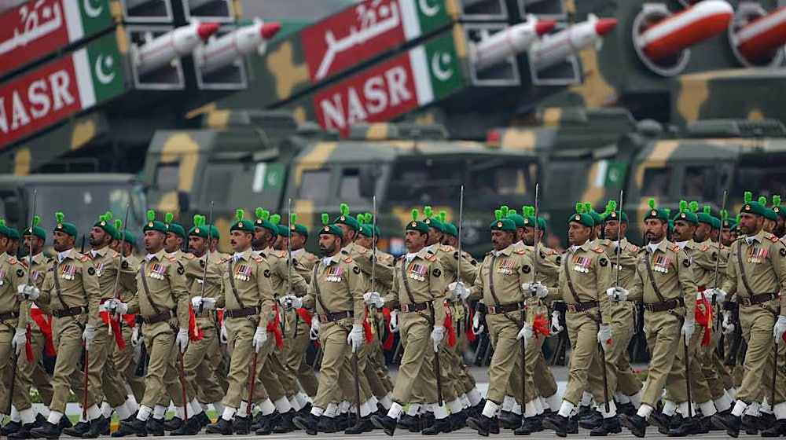

By Ali Hassan | Published Mar 17, 2024 | 8:16 AM
Chinese armed forces will participate in the upcoming Pakistan National Day military parade on March 23, announced Zhang Xiaogang, the spokesperson for the Ministry of National Defense of China.
According to the spokesperson, the Guard of Honor of the Chinese People’s Liberation Army (PLA) will send a contingent to Pakistan in mid-to-late March to participate in the Pakistan Day Parade upon the invitation of the Pakistani military.
It is pertinent to mention that this won’t be the first time that the Chinese troops will be participating in the Pakistan’s Day Parade. Earlier in 2017, they also took part in the event.
Military troops from several other countries, including Saudi Arabia, have also participated in the event in the past.
The preparations for the Pakistan Day Joint Services Parade began last month. Previously, the Ministry of Defence had already written letters to the ministries, divisions, and chief secretaries of the four provinces, Azad Kashmir and Gilgit-Baltistan seeking lists of officials by February 15 who are to be invited to the Pakistan Day Parade.
The event is attended by top government and military officials, along with officials from foreign countries. Furthermore, the general public also participates in large numbers to witness the parade.